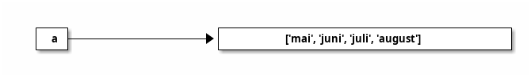

Programmering og modellering X
Innhold
Introduksjon
Prosessoren (CPU-en) i en rimelig datamaskin kan i dag gjennomføre over 10 milliarder desimaltallsoperasjoner hvert sekund. Hold en ball en meter over bakken. Fra du slipper ballen, til den treffer bakken, kan datamaskinen din fylle ut en gangetabell som går fra 1 til 45 000.
Datamaskiner endrer spillereglene fullstendig.
Personlig tror jeg ikke det er essensielt at hver og en av oss må kunne programmere disse maskinene. Jeg tror dog det er viktig, og at det stadig blir viktigere, at vi veit hvilke muligheter programmeringen åpner for. Nesten uavhengig av hvilket fagfelt du jobber innenfor, finnes det oppgaver som best lar seg løse med programmering.
Programmering i seg selv er en ferdighet uten andre krav til forkunskaper enn at du må kunne lese og skrive. For de fleste byr allikevel programmering på en bratt læringskurve. Datamaskiner er ufattelig gode til noen ting, spesielt regning, og tilsvarende dårlig til andre. Der vi kan lese en setning som «dnene steningen ihonnelder neon fiel», vil if x == 2 og if x = 2 kunne være forskjellen på et dataprogram som fungerer og et som ikke fungerer.
Som spirende programmerer kommer du til å kjenne på både frustrasjon og irritasjon, men forhåpentligvis en overvekt av mestringsfølelse og glede. I starten bruker vi gjerne tre timer på å automatisere en jobb det ville tatt oss fem minutter å gjøre for hånd. Tro meg uansett når jeg sier at følelsen når kodesnutten kjører uten feilmelding etter tre timers jobb gjør det mer enn verdt investeringa.
Lykke til!
Et første program
Før vi gjør noe annet, kan vi ha et kort førstemøte med Python. Om du er på en Windows-maskin med Python installert (er du elev i Osloskolen, skal det være tilfellet) kan du trykke på Windows-knappen på tastaturet, skrive «cmd» i feltet som kommer opp, trykke enter, og forhåpentligvis få opp noe à la følgende.

I det vinduet skal du nå kunne skrive «python» og trykke enter. Du bør få opp litt tekst og til slutt en linje som viser >>>.
Forsøk å skrive følgende linjer og trykk enter etter hver.
>>> print("Hei, verden!")
>>> 2 + 2
>>> 2 + 2 == 5
>>> # print("Hei, verden!")
Du bør ha fått noe lignende det under tilbake.
Hei, verden! 4 False
I så fall, godt jobba! Du har nå begynt å skrive litt Python. Vi kommer snart tilbake til hvordan jeg ønsker at du skal jobbe med kodesnuttene som står på denne sida mens du jobber deg gjennom temaene.
Faget
Denne sida er opprinnelig skrevet for faget Programmering og modellering X slik det fremstår ved skolestart høsten 2018. Vi har da følgende læremål å forholde oss til:
Grunnleggende programmering
- gjøre rede for overgangen mellom høynivåkode og lavnivåkode
- omgjøre problemstillinger til konkrete delproblemer, vurdere hvilke delproblemer som lar seg løse digitalt, og utforme løsninger for disse
- bruke grunnleggende programmering som variabler, datatyper, løkker, tester, plotting, tilfeldige tall, funksjoner og enkel brukerinteraksjon
- lage strukturerte og oversiktlige programmer med hensiktsmessige kommentarer
Matematiske metoder
- lage programskisser og algoritmer med utgansgpunkt i et matematisk problem
- bruke og utlede numeriske metoder for å derivere og integrere funksjoner
- bruke og utlede metoder for å finne nullpunter til funksjoner
- bruke og utlede numeriske metoder til å løse differensiallikninger
- sammenligne noen analytiske og numeriske metoder
Modellering
- utforme matematiske modeller med utgangspunkt i praktiske problemstillinger og vurdere modellene
- gjøre rede for modellbegrepet og drøfte ulemper og fordeler ved noen modeller
- sammenligne resultater fra simuleringer med eksperimentelle data
- planlegge, utføre, drøfte og presentere et selvstendig arbeid knyttet til modellering
Opplegg
Vi legger opp en prosjektbasert gjennomgang. Når man hører om at lister i Python er «muterbare», at funksjoer kan ha «bieffekter» eller at self viser til instansen av klassen som kjører metoden, er det nyttig om du ser behovet for disse fagbegrepene i et arbeid du holder på med.
Vi kommer til å ha to prosjekter på høsten og to på våren. Jeg kommer til å legge noen anbefalinger for hvilke prosjekter dette kan være, men jeg er åpen for forslag om du har noe annet du kunne tenkt deg å se nærmere på.
Matematikk og programmering
Programmering
Når vi programmerer, setter vi opp et sett med instrukser til datamaskinen. Disse instruksene er en trinnvis gjennomgang av hvordan maskinen skal løse et problem.
Med en fiktiv maskin som i utgangspunktet kun kan legge sammen og trekke fra, hva forsøker vi å få maskinen til å gjøre via trinnene under?
sett a til å være tallet 5
sett b til å være tallet 3
sett svar til å være tallet 0
så lenge b er større enn null, gjør følgende:
oppdater svar ved å legge til a
senk verdien til b med 1
Hva vil verdien til svar være når dette programmet har kjørt ferdig?
Matematikk
Det forrige eksempelet ville vi løst matematisk ved å skrive opp følgende uttrykk:
\[ \textrm{svar} = 5 + 5 + 5 = 5 \cdot 3 \]
svar har altså verdien 15. Her forteller vi ikke lenger hvordan det skal regnes ut, vi sier bare hva svar er.
Dette kunne vi gjort i de aller fleste programmeringsspråk òg, i Python ville det for eksempel sett ut som følger:
a = 5 b = 3 svar = a * b
Som da ville gitt oss…
print(svar)
15
Dette kan vi gjøre fordi Python kommer med gangefunksjonen innebygd. Det dukker dog raskt opp matematiske påstander vi ikke kan løse uten en trinnvis prosess.
Et enkelt matematisk spørsmål kan for eksempel være at «hva er produktet av de førti første primtallene?» Dette har vi i de aller fleste programmeringsspråk ikke direkte måte å løse, vi må fortelle maskinen hva den skal gjøre instruks for instruks.
Programmeringsspråk
Vi skal gjennom dette arbeidet bruke programmeringsspråket Python.
Det er mange gode grunner til å velge Python … og mange gode grunner til å velge noe annet.
Valg av språk
Det finnes et utall programmeringsspråk. Noen språk er bedre egnet enn andre for visse oppgaver, intet språk er best på alt. Om du veit at det eneste du skal jobbe med er statistikk, ville kanskje det rette valget for deg være språket R; om du skal jobbe med Arduino bør du bli kjent med C++; om du ikke liker den imperative fremgangsmåten de fleste språk byr på, men ønsker en mer funksjonell tilnærming, plukk opp Haskell; elsker du parenteser, se nærmere på Lisp; vil du skrive programmer som kjører i nettleseren, lær deg Javascript; hater du deg selv, sett deg ned med Brainfuck (jeg beklager språket).
I dette faget kommer vi til å bruke språket Python. Python er et populært språk, noe som både fører til og er på grunn av at det kan brukes innenfo mange fagdisiplinerer. En av fordelene med Python, er at overgangen fra pseudokode til kjørende program ofte er lite. Under ser vi pseudokoden fra tidligere («Programmering») oversatt til Python.
a = 5 b = 3 svar = 0 while b > 0: svar = svar + a b = b - 1 print(svar)
15
Ulike typer programmeringsspråk
I teorien kan alle programmeringsspråk som er såkalt turingkompletteEtter Alan Turing, av «The Imitation Game»-berømmelse beregne alt som kan beregnes. For at et språk skal være turingkomplett, må det litt forenklet ha mulighet til å gjenta kode om en betingelse ikke er nådd og ha en form for hukommelse. Dette gjelder i praksis alle programmeringsspråk.
Allikevel er det en voldsom forskjell på de ulike språkene. Et klassisk eksempel de fleste programmere har vært innom, er å få maskinen til å si "Hello, world!". La oss se på det for tre ulike språk.
«Assembly»
extern exit, printf section .data msg db "Hello World!", 10, 0 section .text global main main: push msg call printf mov dword [esp], 0 call exit
Assembly er ikke ett programeringsspråk, men en samlebetegnelse for språkene skrevet spesifikt for hver CPU-type. Språket brukt over (hentet fra denne snutten) er ment for den såkalte x86-arkitekturen.
C
#include<stdio.h> int main() { printf("Hello, world!"); return 0; }
C er et klassisk programmeringsspråk og det dukker opp mer eller mindre over alt.
Python
print("Hello, world!")
Høynivå og lavnivå
Vi ser tydelige forskjeller på eksemplene over. Assembly-koden ligger nære de instruksjonene CPU-en sjøl trenger for å kunne skrive «Hello, world!» på skjermen, mens Python-koden mer eller mindre bare repeterer oppgaveteksten.
Vi sier at assembly er lavnivå-kode, siden man må bruke ressurser på for eksempel direkte minnehåndtering når man skriver i det. Python derimot er høynivå-kode, hvor brukeren ikke behøver tenke på slikt. C legger seg et sted mellom de to.
Imperative og deklarative kode
Felles for de tre eksemplene over er at vi for hver linje i koden forteller programmet hva det skal gjøre, vi sier at kodestilen er imperativ.
Et alternativ til imperativ kode er deklarativ kode. Da forteller vi programmet kun hva vi har lyst på, ikke nødvendigvis hvordan vi ønsker at problemet skal løses.
Under kommer to python-løsninger til oppgaven «lag en liste med de 100 første kvadrattaellene».
n = 1 # sett verdien av n til 1 kvadrattall = [] # sett verdien av kvadrattall til [] while n <= 100: # gjør den kommende snutten så lenge n er mindre eller lik 100 kvadrattall.append(n * n) # tilføy n * n i kvadrattall n += 1 # øk verdien til n med 1
kvadrattall = list(map(lambda x: x ** 2, range(1, 101)))
Her er det mange ord du ikke har sett før. Noen av dem kommer du til å bli svært godt kjent med, mens andre skal få lov til å holde seg obskure en god stund til. Med dette eksempelet ønsket jeg å illustrere at man innad i ett programmeringsspråk kan skrive innenfor mange ulike stiler.
Noen språk egner seg dog bedre til visse stiler, vi kommer i all hovedsak til å skrive imperativ kode i Python.
Verdier
Totallssystemet
Til hverdags bruker vi, selv «datafolk», titallssystemet. Vi bruker ti ulike siffer, 0, 1, 2, 3, 4, 5, 6, 7, 8, 9, til å angi hvor mange man har av den tierpotensen plasseringen til sifferet står på, altså koeffisienten til hver tierpotens. Til slutt legger vi sammen alle disse tierpotensene.
La oss se på hvordan tallet 1020304 er bygd opp i titallsystemet.
1020304 = 1 * 10^6 + 0 * 10^5 + 2 * 10^4 + 0 * 10^3 + 3 * 10^2 + 0 * 10^1 + 4 * 10^0
Her har vi altså én million, null hundretusener, to titusener, null tusener, tre hundrere, null tiere, og fire enere. Vi leser det sjølsagt som «énmilliontjuetusenogfire».
Minnet til en datamaskin er satt sammen av en lang rekke elektriske ledere det enten går eller ikke går strøm i, de er enten på eller av, 1 eller 0. Datamaskiner flest jobber altså i et totallssystem.
10100101 = 1 * 2^7 + 0 * 2^6 + 1 * 2^5 + 0 * 2^4 + 0 * 2^3 + 1 * 2^2 + 0 * 2^1 + 1 * 2^0 = 128 + 32 + 4 + 1 = 165
Verdien 10100101 i totallsystemet er altså 165 i titallsystemet, vi kan skrive det som (1010010)2 = (165)10.
Vi kaller en 1-er eller 0-er, en bit. En samling av åtte bits kaller vi en byte.
Regn følgende bytes over til titallssystemet:
00000111
10101010
10000011
11111111
Basispython
Regnerekkefølge og kommandolinja
Siden Python-programmer kan oversettes til maskinkode løpende, kan vi jobbe interaktivt med Python, à la slik vi er vant med fra CAS i Geogebra. Vi kan altså, om vi ønsker, skrive en linje med kode, se hva denne gjør, for så å skrive neste.
For å åpne en enkel Python-«prompt» (som er navnet på det som i vårt tilfelle tegnene «>>>»), kan du åpne kommandolinjeverktøyet ved å trykke windows-tasten og skrive «cmd», trykke enter, og skrive python og trykke enter i vinduet som åpner seg. Du skal få fram noe lignende følgende:
Python 3.6.1 |Anaconda 4.4.0 (64-bit)| (default, May 11 2017, 13:25:24) [MSC v.1900 64 bit (AMD64)] on win32 Type "help", "copyright", "credits" or "license" for more information. >>>
Hver gang du ser >>> «prompter» Python deg til å skrive inn en kommando.
Vanlige regneoperasjoner gjennomfører vi i Python på akkurat den måten man skulle forvente.
>>> 2 + 3 # addisjon ved å skrive "+" mellom to verdier 5 >>> 2 - 3 # subtraksjon ved å skrive "-" mellom to verdier -1 >>> 2 * 3 # multiplikasjon ved å skrive "*" mellom to verdier 6 >>> 2 ** 3 # eksponentiering ved å skrive "**" mellom to verdier 8 >>> 2 * (5 - 3 ** 2) ** 2 # regnerekkefølge oppfører seg på "vanlig" måte 32
Av disse er det kun potensen som skiller seg ut fra hvordan vi «vanligvis» skriver regning.
Du kan med andre ord begynne å bruke Python som en kalkulator uten mer om og men … om enn kun å gjøre dette ville være å skrape den aller øverste delen av overflaten av hvilke muligheter et fullverdig programmeringsspråk byr på.
Prøv deg fram på vanlig tallregning i Python direkte i interpreteren.
Variabler
Vi kan nå gjennomføre enkle regneoperasjoner, men det melder seg raskt et behov for å kunne ta vare på resultatet fra en utregning, for så å kunne bruke dette i en annen utregning seinere. Dette kan vi gjøre via navngitte variabler.
Hva er et navn?
I Python viser navn alltid til verdier.

I Python kan det godt være to navn på samme verdi.

Python har dynamiske typer noe som vil si at vi kan gjenbruke navn på helt andre type verdier enn hva de opprinnelig blei brukt på.
a = 42 b = a a = "Babel"
Som gir følgende navnstruktur:

Dette er i kontrast til et språk som C, hvor vi for eksempel ville sett følgende:
int a = 42; a = 42.0;
warning: data definition has no type or storage class a = 43.0; ^ warning: type defaults to 'int' in declaration of 'a' [-Wimplicit-int] error: redefinition of 'a' note: previous definition of 'a' was here int a = 42; ^
Dette er fordi C er et språk med statiske typer. Det vil si at om vi har sagt at a skal være et heltall (int), må vi holde den som det gjennom hele programmet.
Interaksjon
Printing
Fra de fleste programmer ønsker vi en eller annen form for informasjon ut fra programmet. Dette kan være at programmet lager en graf for oss, at den skriver data til en fil, at interpreteren skriver svaret direkte på mellomregninger, eller at programmet skriver tilbake til kommandolinja.
Sistnevnte gjøres via funksjonen print.
print("Hei, verden!")
Det er heller ikke noe i veien for å kombinere printing med variabler.
a = 2 b = 3 c = a + b print("Summen av ", a, " og ", b, " er ", c, ".")
Dette kan fort bli en uhensiktsmessig måte å skrive ut svar på, så vi bruker heller den innebygde formateringen f-strenger.
print(f"Summen av {a} og {b} er {c}.")
f-strenger er særegent for Python, men andre språk har gjerne sine måter å formatere tekstrestrenger på. Dette er et kraftig verktøy, hvor vi har store muligheter for å formatere svarene våre på en hensiktsmessig måte.
Vi kan, eksempelvis, spesifisere hvor mange desimaler vi ønsker. (Setningen from math import pi¨ skal vi se i mye mer detalj på seinere.
from math import pi print(pi) print(f'pi skrevet med 5 gyldige siffer er {pi:.5}.')
Generelt kan vi spesifisere et tall som skal skrives ut ved å bruke tallets totale bredde og dets presisjon på en enkel måte med f-strenger.
bredde = 7 presisjon = 3 print(f'pi = {pi:{bredde}.{presisjon}}') print(f'pi = {pi:7.3}')
Input
Å be brukeren om å taste inn verdier til programmet ditt kan enkelt gjøres ved å bruke input-funksjonen. Om vi er usikre på hvordan denne brukes, kan vi benytte oss av pythons innebygde hjelpefunksjonalitet.
help(input)
Help on built-in function input in module builtins:
input(prompt=None, /)
Read a string from standard input. The trailing newline is stripped.
The prompt string, if given, is printed to standard output without a
trailing newline before reading input.
If the user hits EOF (*nix: Ctrl-D, Windows: Ctrl-Z+Return), raise EOFError.
On *nix systems, readline is used if available.
input er altså en innebygd (built-in) funksjon som leser en tekststreng fra standard input. Dersom vi ønsker å gi brukeren en prompt, à la «>>>» kan vi gjøre det ved å gi det som argument til funksjonen.
navn = input("Hva heter du? ") print(f"Du heter {navn}." )
Typer
Et pythonprogram er et sett med instruksjoner som handler på ulike objekter. Objekter i Python kommer i to utgaver, skalare objekter og ikke-skalare objekter. Et skalart objekt er udelelig, det er atomene i Python. Ikke-skalare objekter, for eksempel tekststrenger, har en indre struktur. Av de følgende, er boolske verdier, heltall og flyttall skalare objekter.
Boolske verdier
I kapittelet Datamaskinen introduserer jeg logiske verdier som enten kan være sanne eller usanne. Disse er nødvendige for at vi skal kunne ha et fullstendig programerbart språk. Når vi seinere skal se på såkalte if-setninger, er vi nødt til å ha en måte å avgjøre om noe er sant eller usant på.
>>> sann = True >>> usann = False >>> sann True >>> usann False
Boolske verdier oppstår ofte når vi ønsker å vurdere en påstand. Eksempelvis er det sant at verdien 3 er større eller lik verdien 2, det er også Python enig i.
>>> 3 >= 2 True >>> 3 == 2 False >>> 3 < 2 False
Merk at = ikke er en logisk sjekk, à la ulikhetene over. Om vi ønsker å sjekke for likhet, må vi bruke ==. = er fremdeles «tildelingoperatoren», vi bruker den for å gi ting navn, noe som betyr at det ikke er noe i veien for å gjøre for eksempel følgende i Python:
sannhetsverdi = 3 > 2 print(sannhetsverdi)
Her vil først Python evaluere påstanden på høyre side, altså 3 > 2, finne at dette er sant, og dermed sette sannhetverdi til å ha verdien True.
Lister
Lister eller arrays er en klassisk datastruktur. Vi samler en rekke verdier inn i en liste, for at vi så skal kunne gjøre operasjoner på lista direkte eller elementvis. Lister lages i Python ved å bruke klamme-parenteser, [ og ], hvor hvert element er adskilt med komma.
favorittall = [-1, 0, 7, 11, 42]
Det er heller ikke noe i veien for å ha noe annet enn tall i ei liste, ei heller blandede typer.
frukter = ["eple", "pære", "appelsin", "mango"]
Innholdet i ei liste kaller vi enkeltvis for listas elementer, og hvert element er tildelt en indeks. Under ser vi nærmere på frukter.
| element | eple | pære | appelsin | mango | | indeks | 0 | 1 | 2 | 3 |
Legg merke til at i Python er listene nullindeksert, altså har det første elementet i lista indeks 0.
print(frukter[0])
Vi kan hente ut elementer fra ei liste ved å bruke slice-notasjonen. Den ser ut som listenavn[første ønskede : ikke-inkludert siste ønskede : steglengde]. Om vi har liste min_liste av n elementer, kan vi hente ut de k første ved å skrive min_liste[0:k:1], alternativt bruke at nullte element er standard startverdi og 1 er standard steglengde, min_liste[:k].
print(frukter[0:2:1]) print(frukter[:2]) print(frukter[2:])
['eple', 'pære'] ['eple', 'pære'] ['appelsin', 'mango']
- Muterbarhet
Se på følgende snutt, og skriv ned hva du tror vil bli gitt av print-setningen.
a = ['mai', 'juni', 'juli', 'august'] b = a a[1] = 'november' print(f'a er: {a}') print(f'b er: {b}')
Forsøk å kjøre koden, hva ser du? Jo, der vi forventer at vi ved linja
b=askal få en kopi av listaa, ser det ut som at vi får to forskjellige navn til samme ting, og det er akkurat det vi får. En liste er en «muterbar» eller mutable datastruktur i Python. Og hva vil så det si? Jo, der vi setter


Og hvorfor er dette viktig? Jo, fordi verdier i lister kan endres uten at man oppretter en ny liste. Nå blir det vesentlig at navn i python alltid viser til et objekt, og når vi sier
b = aogaer en liste, får vi rett og slett bare ett nytt navn påa.Hvordan skal vi så gjøre det? Når vi skal kopiere en liste, kan vi gjøre dette ved å skrive
b = a[:], siden slicena[:]er en ny liste med alle elementene ia. Gjør vi dette igjen med snutten over, vil vi få ønske oppførsel.a = ['mai', 'juni', 'juli', 'august'] b = a[:] a[1] = 'november' print(f'a er: {a}') print(f'b er: {b}')
a = ['test'] b = a[:] print(id(a)) print(id(b))
enere = [1, 1, 1, 1, 1] print(id(enere)) enere += [5] print(id(enere))
enere = "11111" print(id(enere)) enere += "5" print(id(enere))
Oppgaver
Kortoppgaver
- Be om et navn, skriv ut "Hei på deg, {navn}" # Husk print("Hei på deg", navn)
- Be om ett tall, skriv ut tallet opphøyd i andre.
- Be om ett tall, skriv ut tre lavere enn tallet, så ganger to # Test med tall = 1 => -4
- Be om ett tall, skriv ut det dobbelte av tallet i fjerde
- Be om to tall, skriv ut summen av dem
- Be om to tall, skriv ut produktet av dem
- Be om to tall, skriv ut det første opphøyd i det andre
- Uten bruk av PC, hva blir…
2 + 2 ** 2?3 * 3 - 3?3 + 3 ** (3 * 3)?(3 - 3) ** 3?3 * 3 ** 3?4 + 4 % 4?5 // 4?5 / 2 * 5?
- Kontroller svarene dine i oppgave 8 ved å bruke Python.
Abstraksjon
Biblioteker
Et fysikkbibliotek
tabaa004> python -m site --user-site C:\Users\tabaa004\AppData\Roaming\Python\Python36\site-packages
Her legger jeg en kort fil som jeg kaller fysikk.py. Dette skal på sikt være fysikkbiblioteket mitt. Her ønsker jeg å samle alle konstanter, samt en del formler og likninger jeg stadig ender med å bruke.
import fysikk as fy print(fy.g)
9.81
Linja import fysikk as fy er vesentlig. Den består av to nøkkelord, import og as; ett modulnavn, fysikk; og ett alias, fy.
En slik importeringssetning kommer vi til å se i de aller fleste programmene vi skal lage. Pythons motto er at det kommer «batteries included», men det betyr ikke at alt ligger tilgjengelig idet vi starter programmet, vi må importere bibliotekene.
I eksempelet over er fysikk et slikt bibliotek. Vi kommer seinere til å bruke et knippe biblioteker, spesielt math, numpy, scipy, og matplotlib.
En del slike biblioteker er en del av Pythons standardbibliotek. Det vil enkelt og greit si at utviklerne av Python også tar seg av å holde disse modulene (les: bibliotekene) vedlike. En del av standardbiblioteket er innebygde funksjonerDette er funksjoner som er tilgjengelig uten noen form for ~import~-setning, f.eks. funksjonen ~sorted~, som sorterer ei liste, men det er også egne moduler man må importere, slik som math~math~ trenger vi fort, dette biblioteket inneholder både ~sqrt~ og ~factorial~..
Vårt første møte import-setninger blir også vårt første møte «punktnotasjon» eller dot notation. Vi skriver fy.g for vi ønsker å bruke g fra fysikk-modulen, som vi her har valgt å gi kallenavnet («alias»-et) fy. Vi ser av feilmeldingen under at om vi forsøker å bruke g direkte, får vi beskjed om at denne ikke er definert.
import fysikk print(g)
Traceback (most recent call last): File "<stdin>", line 1, in <module> NameError: name 'g' is not defined
Vi kommer til å møte på punktnotasjonen i en situasjon til, for bruk av metoder på objekter. Mer om det seinere.
Vårt typiske importoppsett
Du vil noen ganger se anbefalt å bruke en pakke som heter pylab. Dette er en samlepakke for tidligere nevnte scipy, numpy og matplotlib. Dette er en god pakke, men vi kommer ikke til å bruke den her. Grunnen er enkelt og greit at jeg mener den inviterer til dårlige vaner og at brukeren ikke må forholde seg til økosystemet hun jobber i. Pylab oppfordrer til å importere pakken via
from pylab import *
hvor *-markøren vil si «alt». Problemet med dette er at det nå ikke blir synlig for brukeren hvor en funksjon, klasse eller variabel kommer fra. Det øker også sannsynligheten for at man ved uhell skriver over allerede-definerte navn.
Vi kommer til stort sett til å importere i det minste følgende:
import numpy as np import matplotlib.pyplot as plt
Vi kommer også til å hente ut spesifikke funksjoner fra eksempelvis math, noe vi kan gjøre via:
from math import sqrt import math import numpy as np print(sqrt(2)) help(liste.extend)
Legg merke til at vi her ikke lenger har behov for punktnotasjon når vi skal bruke sqrt, da vi spesifikt har hentet ut denne fra math-biblioteket.
Funksjoner
Vi har nå fått et knippe verktøy for å lage ulike variabler, men vi kommer snart til å se at vi gjentar oss selv mye i programmeringen. Som programmerer bør du være på utkikk etter kode som er gjentagelser av tidligere kode, dette kan som oftes samles i en egen blokk. Vi kaller slike gjenbrukebare blokker av kode for «funksjoner» eller «underrutiner» (subrutines).
Vi har allerede brukt et par funksjoner, spesielt print-funksjonen. Denne funksjonen har et navn (print), den tar inn ett eller flere argumenter (det som skal skrives) og den gjør noe (skriver til skjermen).
Definisjon og kall
De to hovedtingene vi gjør med en funksjon er å definere den og å bruke (kalle) den. Definisjon skjer i Python ved å bruke nøkkelordet def. Et kall fungerer ved at vi skriver funksjonsnavnet og en parentes som inneholder eventuelle paramtere.
def hilsen(): """En funksjon som sier 'hei'""" print('hei') return def hilsen_navngitt(navn): """En funksjon som hilser på noe navngitt.""" print(f'Hei, {navn}!') return hilsen() hilsen_navngitt('Trond')
Legg merke til at funksjonene over ikke returnere noe. De gjennomfører setningene det de bler bedt om å gjøre, men gir ikke tilbake noen verdi.
I slike tilfeller kan vi enten skrive return, return None, eller la være å skrive noen retursetning overhodet.
Modifiser hilsen og hilsen_navngitt til heller å returnere sine respektive tekststrenger.
Ønsket oppførsel er altså for eksempel:
svar = hilsen_navngitt('Trond') print(svar)
Hei, Trond!
Ord når vi snakker om funksjoner
En funksjon defineres og i definisjonen tar funksjonen inn argumenter. Når vi kaller funksjonen, kan vi sende variabler inn som funksjonens parametere.
Strukturen på alle funksjonsdefinisjoner er som følger:
def funksjonsnavn(arg1, arg2, ...):
"""En beskrivelse av hva funksjonen gjør."""
setninger hvor funksjonen gjør noe
return det funksjonen skal returnere
La oss si vi ønsker å lage en funksjon som tar inn et tall og returnerer tallet kvadrert. Dette kan vi gjøre som vist under.
def kvadrer(x): """Kvadrer tallet x.""" svar = x * x return svar print(kvadrer(2))
I denne definisjonen (markert med nøkkelordet def), setter vi navnet til funksjonen til å være kvadrer, vi definerer ett argument x, vi har en setning i funksjonskroppen som lager en variabel som kun er synlig for funksjonen, svar, som vi setter til å være x * x, før vi avslutter med å returnere svar. Til slutt kaller vi funksjonen ved å skrive funksjonsnavnet, og å sende inn parameteren 2.
Hva er funksjonsnavnet, argumentene og returverdi for funksjonen under?
def snitt(a, b): """Gi gjennomsnittet av tallene a og b.""" svar = (a + b) / 2 return svar
Videre, i funksjonskallet under, hva vil verdien av variabelen regnet_snitt være og hva er parameterne i kallet?
regnet_snitt = snitt(4.5, 9)
Skop
Se på følgende programsnutt.
n = 3 def inkrement(n): """Øk verdien til n med 1.""" n += 1 print(f'--Vi er inne i funksjonen.') print(f'--Verdien til n er nå {n}.') return n inkrement(n) print(f'Vi er på utsiden av funksjonen.') print(f'Verdien til n er nå {n}.')
--Vi er inne i funksjonen. --Verdien til n er nå 4. Vi er på utsiden av funksjonen. Verdien til n er nå 3.
Her har vi først en variabel kalt n, som vi setter til verdien 3. Vi definerer så en funksjon med argument n. Dette argumentet har ikke noe med variabelen å gjøre, argumentet gjelder kun for funksjonen, og blir opprettet idet funksjonen blir laget. Til slutt kaller vi funksjonen
Hva skjer så om vi kjører samme skript, bare med én vesentlig endring?
n = 3 def inkrement(n): """Øk verdien til n med 1.""" n += 1 print(f'--Vi er inne i funksjonen.') print(f'--Verdien til n er nå {n}.') return n n = inkrement(n) # Obs! print(f'Vi er på utsiden av funksjonen.') print(f'Verdien til n er nå {n}.')
Kjør de to foregående programsnuttene og forklar eventuelle avvik mellom dem.
De delene av et program hvor en gitt variabel er tilgjengelig, kaller vi den variabelenes «skop», eller scope.
x = 2 def utskrift(): print(f'Inne i funksjonen er verdien til x {x}.') return utskrift() print(f'Utenfor funksjonen er verdien til x {x}.')
x = 2 def utskrift_med_indre(): x = 3 print(f'Inne i funksjonen er verdien til x {x}.') return print(f'Utenfor funksjonen er verdien til x {x}.')
Hva blir skrevet av følgende program?
def kvadrer(x): return x*x def g(y): return y + 3 def h(y): return kvadrer(y) + 3 print h(2)
Kjenn dine røtter - halveringsmetoden
Av en eller annen grunn ønsker vi å finne nullpunktet til funksjonen \(f(x) = 0.7e^{-x} - 5x + 13\). Du setter deg ned med penn og papir, og innser raskt at du ikke kan det du behøver for å finne en analytisk løsning til oppgaven (se f.eks. løsningen til Wolfram Alpha).
Du tar derfor fram det digitale millimeterpapiret, Geogebra, tegner grafen, trykker «skjæring mellom to objekt», velger grafen og x-aksen og får opp at nullpunktet ligger ved \(x=2.61\).
Hvordan gjør Geogebra dette?
Én måte å gjøre det på er ved hjelp av halveringsmetoden. Dette er en måte å finne et nullpunkt på, gitt at du veit følgende:
- to punkter på funksjonen
- at funksjonsverdien er negativ i ett av disse punktene
- at funksjonsverdien er positiv i det andre av disse punktene
Vår \(f(x)\) er positiv i \(x=0\) og negativ i \(x=10\), så dette kan være gode startverdier.
Med dette på plass går algoritmen som følger:
a er en verdi hvor f(a) > 0
b er en verdi hvor f(b) < 0
eps er en bitte liten verdi, f.eks. 0.0001
hvis f( (a+b)/2 ) < 0
sett b til å være (a+b)/2
ellers
sett a til å være (a+b)/2
gjenta så lenge f( (a+b)/2 ) > eps
Her er det en gjentagende del. Om du skulle programmert dette ved bruk av en løkke, ville du brukt en for- eller while-løkke for å løse dette? Hvorfor?
For vår funksjon kommer gangen i dette til å se ut som følger:
Iterasjon nr. 1 a har verdien 0.0 b har verdien 10.0 -------------------- Iterasjon nr. 2 a har verdien 0.0 b har verdien 5.0 -------------------- Iterasjon nr. 3 a har verdien 2.5 b har verdien 5.0 -------------------- Iterasjon nr. 4 a har verdien 2.5 b har verdien 3.75 -------------------- Iterasjon nr. 5 a har verdien 2.5 b har verdien 3.125 -------------------- Iterasjon nr. 6 a har verdien 2.5 b har verdien 2.8125 -------------------- Iterasjon nr. 7 a har verdien 2.5 b har verdien 2.6562 -------------------- Iterasjon nr. 8 a har verdien 2.5781 b har verdien 2.6562 -------------------- Iterasjon nr. 9 a har verdien 2.5781 b har verdien 2.6172 -------------------- Iterasjon nr. 10 a har verdien 2.5977 b har verdien 2.6172 -------------------- Iterasjon nr. 11 a har verdien 2.6074 b har verdien 2.6172 -------------------- Iterasjon nr. 12 a har verdien 2.6074 b har verdien 2.6123 -------------------- Iterasjon nr. 13 a har verdien 2.6099 b har verdien 2.6123 -------------------- Iterasjon nr. 14 a har verdien 2.6099 b har verdien 2.6111 -------------------- Iterasjon nr. 15 a har verdien 2.6099 b har verdien 2.6105 -------------------- Iterasjon nr. 16 a har verdien 2.6102 b har verdien 2.6105 -------------------- Iterasjon nr. 17 a har verdien 2.6102 b har verdien 2.6103 -------------------- Iterasjon nr. 18 a har verdien 2.6102 b har verdien 2.6103 -------------------- Svaret er 2.6103.
Forsøk å implementere halveringsmetoden for denne funksjonen i python. Du kan bruke funksjonsdefinisjonen
import math def f(x): return 0.7 * math.exp(- x) - 5 * x + 13
og sette startverdiene til 0.0 og 10.0.
Kjenn dine røtter - Newton-Raphsons metode
Atter en gang ønsker vi å finne eventuelle nullpunkter til funksjonen \(f(x) = 0.7e^{-x} - 5x + 13\). Vi velger oss ett startsted og en gjetning om at et av nullpunktene ligger i retning av tangenten i punktet. Det er med andre ord en tanke om at «jeg veit ikke bedre enn at du (les: funksjonen) fortsetter som du gjør akkurat nå».
import math def f(x): return 0.7 * math.exp(-x) - 5 * x + 13 print(newton_raphson(f, 0))
Oppgaver
Kortoppgaver
- Lag en funksjon som tar inn et tall og returnerer det dobbelte
- Lag en funksjon som tar inn et tall og returnerer halvpart
- Lag en funksjon som returnerer summen av to tall
- Lag en funksjon som returnerer kvadratet av et tall
- Lag en funksjon som tar inn to tall og returnerer det ene opphøyd i det andre
Samme utfall?
Under vises definisjonen av to funksjoner. Beskriv forskjellen på de to funksjonene. Hvordan påvirker det bruken av dem?
def addisjon_1(a, b): """Legg sammen to tall, a og b.""" res = a + b print(f"Summen av a og b er {res}.") return None def addisjon_2(a, b): """Returner summen av to tall, a og b.""" res = a + b print(f"Summen av a og b er {res}.") return res
Intermezzo: Tilfeldige tall
Å lage tilfeldige tall er vanskeligere enn man skulle tro. Det er kanskje ikke vanlig å kjøpe bøker som kun inneholder tilfeldige tall lenger, det var kanskje aldri vanlig, men det er fremdeles et marked for virkelig tilfeldige tall.
For den typen programmering vi er på vei til å begi oss ut på, kommer vi ikke unna å kaste noen digitale terninger eller stokke tilfeldig om på noen lister. Til dette kan vi bruke random-biblioteket i Python. Dette gir oss ikke virkelig tilfeldige tall, da de er produsert ved bruk av en algoritme, men såkalt pseudo random numbers eller «tilsynelatende tilfeldige tall». Til vårt bruk er de mer enn gode nok.
Her har vi noen essensielle funksjoner, nevnt under. Vi kommer snart nok i situasjoner hvor vi trenger å bruke dem.
import random as rnd desimaltall = rnd.random() # 'desimaltall' er nå i intervallet [0, 1) terningkast = rnd.randint(1, 6) # 'terningkast' er nå i intervallet [1, 6] alfabetisert = ['appelsin', 'eple', 'gulrot', 'pære', 'squash'] rnd.shuffle(alfabetisert) # 'alfabetisert' er neppe alfabetisert lenger
Vi lar det være med det inntil videre.
Tilfeldig π
I alle sirkler er forholdet mellom sirkelens omkrets og diameter omtrent 3. Dette forholdet dukker så ofte opp at det har fått sin egen bokstav, π.
Dette forholdet er dog et irrasjonelt tall, det kan ikke uttrykkes som en brøk av to heltall.
Det er et utall måter å regne ut π på, et enkelt eksempel er å bruke rekken
\[\pi = 4\left(1 - \frac{1}{3} + \frac{1}{5} - \frac{1}{7} + \frac{1}{9} - \dotsb\right).\]
Vi kan også gjøre det ved å bruke arealer. Dersom vi har en sirkel med areal \(A_\circ\) og diameter \(D\), omsluttet av et kvadrat med areal \(A_\square\) med sidelengder like store som diameteren \(D\), kan vi uttrykke forholdet mellom de to arealene som
\[\frac{A_\circ}{A_\square} = \frac{\tfrac{\pi}{4}D^2}{D^2} = \frac{\pi}{4}.\]
Vi får altså følgende uttrykk for π
\[\pi = 4 \frac{A_\square}{A_\circ}.\]
Vi kan så finne et overslag for forholdet mellom disse to arealene ved å bruke tilfeldige tall. Bruk følgende fremgangsmåte:
- Trekk en tilfeldig verdi mellom -1 og 1 for $x$- og $y$-verdiene (her kan du bruke
random.uniform(-1, 1). - Dersom punktet har mindre enn avstand 1 fra origo, er det i sirkelen.
- Gjenta 1 og 2 mange ganger
- Finn forholdet mellom totalt antall punkter og antall punkter inni sirkelen, dette blir et overslag for \(\frac{A_\square}{A_\circ}\).
Programflyt
Logikk
Hvis a er sann og b er sann, så er a og b sann. Hvis a er sann, men b er usann, så er a og b usann.
Innenfor logikken, er og en svært viktig funksjon.
| Navn | Dagligtale | Matematisk | Python |
|---|---|---|---|
| negasjon | ikke | ¬ | not |
| konjunksjon | og | ∧ | and |
| inklusiv disjunksjon | og-eller | ∨ | or |
| eksklusiv disjunksjon | enten-eller | xor |
Sannhetsskjemaer
I det følgende betyr 1 True og 0 False.
a |
not a |
|---|---|
| 0 | 1 |
| 1 | 0 |
a |
b |
a and b |
|---|---|---|
| 0 | 0 | 0 |
| 0 | 1 | 0 |
| 1 | 0 | 0 |
| 1 | 1 | 1 |
a |
b |
a or b |
|---|---|---|
| 0 | 0 | 0 |
| 0 | 1 | 1 |
| 1 | 0 | 1 |
| 1 | 1 | 1 |
Regnerekkefølge
I «vanlig» regning har vi en regnerekkefølge på operatorene som bestemmer om \(2\cdot 3 + 1\) betyr \(6 + 1\) eller \(2\cdot 4\). Videre bruker vi parenteser for å endre regnerekkefølgen der nødvendig, eksempelvis ved å sette \(2\cdot (3 + 1)\) om vi ønsker å ta addisjonen før multiplikasjonen her.
Det samme har vi behov for når vi jobber med logikk. For de vi er interessert i, «ikke», «og» og «eller», er rekkefølgen nettopp slik.
- «ikke» – ¬ –
not - «og» – ∧ –
and - «eller» – ∨ –
or
Siden vi kommer til å gjøre langt mindre så kalt «boolsk algebra» enn vanlig regning, anbefales man å bruke parenteser for å fjerne eventuelle usikkerheter.
Vi kan da se på noen smårare eksempler ved å bruke de to enkle testene 2 <= 3 og 3 < 2 (henholdsvis True, siden 2 er mindre eller lik 3, og False siden 3 ikke er mindre enn 2).
Test følgende i en Python-interpreter:
if 2 <= 3 and 3 < 2 or 2 <= 3: # True and False or True print("Den første kjørte.") else: print("Den første kjørte ikke.") if 3 < 2 and 2 <= 3 or 2 <= 3: # False and True or True print("Den andre kjørte.") print("Den andre kjørte ikke.")
Merk, siden 2 <= 3 evaluerer til True og 3 < 2 til False, er det ingenting i veien for å endre eksempelet over til
a = 2 <= 3 b = 3 < 2 if a and b or a: print("Den første kjørte.") else: print("Den første kjørte ikke.")
dersom … så … if
Dersom vi ønsker at programmeringsspråket vårt skal kunne brukes til å regne ut alle beregnbare funksjoner, så må programmeringsspråket vårt ha en måte å ta avgjørelser på. Dersom språket vi har valgt er Python, så kan slike avgjørelser tas med en if-setning.
Dersom du ønsker å skrive et program som kaster en mynt og sier om det blei kron eller mynt som landet opp, så kan du gjøre det som følger.

Oversatt til pseudokode, kan dette uttrykkes
gjør ting
hvis noe er sant:
gjør disse tingene
hvis ikke:
gjør disse tingene
Om vi så ønsker å gjøre dette til en pythonsnutt som, for eksempel et program som «kaster en mynt» og forteller deg hva det fikk, kan det gjøres på følgende måte:
import random as rnd myntkast = rnd.random() if myntkast > 0.5: print('Jommen om det ikke blei kron denne gangen.') else: print('Det blei visst mynt nå.')
Det blei visst mynt nå.
En if-setning har altså følgende syntaks:
if boolsk(): # boolsk() defineres i syntaksark print("boolsk() ga sant") else: print("boolsk() ga usant")
Dersom du ønsker at programmet skal gjøre noe om if-en ikke inntraff, så kan du altså bruke else.
En forenklet lærer sjekker kun poengsum og setter karakter deretter. Denne forenklede læreren har et oppsett som vises i tabellen under.
| Poeng | Karakter |
|---|---|
| >=95 | 6 |
| >=80 | 5 |
| >=60 | 4 |
| >=40 | 3 |
| >=25 | 2 |
| <25 | 1 |
Vi kan løse dette med if og else som vist under.
import random as rnd poeng = rnd.randint(0, 100) if poeng >= 95: print('Læreren løfter hatten og gratulerer med karakteren 6!') else: if poeng >= 80: print('Læreren gratulerer ydmykt med karakteren 5.') else: if poeng >= 60: print('Læreren tildeler deg herved karakteren 4.') else: if poeng >= 40: print('Læreren mener at karakteren 3 er å leve.') else: if poeng >= 25: print('Læreren står i stolen for ståkarakten 2.') else: print('Læreren ser fram til å se deg til neste år.')
Vi ser her at vi ender med å gjenta strukturen else: if..: gang på gang, og det baller på seg med innrykksnivåer. Som en kur til dette, har vi elif-strukturen. Det samme programmet kan løses som under.
import random as rnd poeng = rnd.randint(0, 100) if poeng >= 95: print('Læreren løfter hatten og gratulerer med karakteren 6!') elif poeng >= 80: print('Læreren gratulerer ydmykt med karakteren 5.') elif poeng >= 60: print('Læreren tildeler deg herved karakteren 4.') elif poeng >= 40: print('Læreren mener at karakteren 3 er å leve.') elif poeng >= 25: print('Læreren står i stolen for ståkarakten 2.') else: print('Læreren ser fram til å se deg til neste år.')
Læreren mener at karakteren 3 er å leve.
Mens vi venter while
Vi har allerede i Valg av språk sett på ei while-løkke. Denne bruker vi når vi ønsker at en programsnutt skal gjenta seg fram til en gitt betingelse er oppfylt. En while-løkke består av nøkkelordet while, et uttrykk som returnerer en boolsk verdi, og en eller flere setninger som skal kjøres.
while uttrykk:
setning(er)
Ønsker vi for eksempel å skrive ut alle heltall fra 1 til 10, kan det løses med en while løkke på følgende vis:
tall = 1 while tall <= 10: print(tall) tall += 1
Collatz' formodning prosjekt
Vurder følgende fremgangsmåte for et vilkårlig, positivt heltall, \(n\):
- Hvis \(n\) er et partall, del det på to
- Hvis \(n\) er et oddetall, gang det med tre og legg til en
Collatz' formodning«Formodning, innen matematikk, en antatt sann setning som ennå ikke har blitt bevist.» (Store norske leksikon) sier at om du så tar tallet du får gjennom samme prosess, og så tar tallet du får da gjennom samme prosses, og så videre, og så videre, vil du til slutt få tallet 1. Uansett hvilket positive heltall du startet på. En del tall har blitt sjekket, men ikke alleAlle tall til $20\cdot2^{58}\approx 5.7646\cdot 10^18$ er sjekket.(https://sweet.ua.pt/tos/bib/3.5.html). Under vises rekka av collatz-tall om man starter på 17. Tall nummer to blir da 52, siden \(1\cdot 3 + 1 = 52\).
17 52 26 13 40 20 10 5 16 8 4 2 1
Ta for gitt i denne oppgaven at n % 2 == 0 er True dersom n er et partall, False hvis oddetall.
Bruk if-setninger og en while-løkke for å lage et program som gjør følgende:
- Ber brukeren om et positivt heltall,
n - Skriver ut suksessive utregninger
nbasert på Collatz' formodning - Slutter når
n == 1
Løpe gjennom ei liste for
for-løkka
Vi har en liste med alle tallene fra 1 til 10. For hvert av tallene ønsker vi å skrive ut hvorvidt tallet er delelig på 7.
tallene = range(1, 10 + 1) for tall in tallene: if tall % 7 != 0: print(f'{tall:2} er ikke delelig på 7.') else: print(f'{tall:2} er så visst delelig på 7.')
I dette eksempelet brukte vi ei for-løkke. Ei slik løkke gjør noe for hvert element i ei liste, eller noe annet det kan itereres over.
Oppgaver
abc-formelen
En generell andregradslikning kan skrives på formen \[ax^2 + bx + c = 0\]
Egenskapene til en andregradslikning bestemmes av diskriminanten. (Denne dukker gjerne opp som \(d=b^2 - 4ac\).) Vi har følgende muligheter for en andregradslikning:
- \(d>0\)
- Andregradslikningen har to løsninger
- \(d=0\)
- Andregradslikningen har én løsning
- \(d<0\)
- Andregradslikningen har ingen reelle løsninger
- a - Antall løsninger
Lag et program som skriver ut antallet løsninger på en andregradslikning spesifisert av brukeren. Du kan velge å ta utgangspunkt i den delvise løsningen under.
from math import sqrt a = input("a: ") b = input("b: ") c = input("c: ") d = None # endre None til å regne ut diskriminanten if d > 0: # Hva ønsker du at skal skje hvis d er positiv? print(None) # fjern denne linja # Her mangler det en elif- og en else-setning print("Ferdig")
- b - Verdien til løsningene
Utvid programmet fra a til også å gi x-verdiene til løsningene
- c - Faktoriseringen utfordring
Utvid programmet fra b til å skrive ut hva andregradslingen er faktorisert. En mulig bruk av programmet kan altså da se ut som følger:
Gi a: 3 Gi b: 3 Gi c: -18 Du ga andregradslikningen Den kan faktoriseres 3(x - 2)(x + 3)
def abc
Lag en funksjon, abc, med følgende spesifikasjoner:
def abs(a, b, c): """Returnerer en liste av løsningene til andregradslikningen a * x**2 + b * x + c = 0 Skriver "Likningen har ingen reelle løsninger" og returnerer None dersom likningen ikke har noen reelle løsninger. Eksempler: abc(1, -2, 1) => [1] abc(1, -5, 6) => [2, 3] abc(1, 0, 1) => None (og printet "Likningen har ingen reelle løsninger") """ loesninger = [] # sett inn din kode her return loesninger
Lagre denne funksjonen i mattebiblioketet ditt, slik at du seinere kan skrive følgende for å løse en andregradslikning.
from matte import abc loesninger = abc(-3, 2, 1) # loeser likningen -3x**2 + 2x + 1 = 0
7-ern
Skriv et program som teller oppover fra 1. Få programmet til å hoppe over tallene som er delelige på 7.
def utvid
Lag en funksjon, utvid, med følgende spesifikasjoner:
def utvid(liste1, liste2): """Returner sammenslåingen («concatination») av liste1 og liste2.""" res = [] # sett inn din kode her return res
def muterende_utvid avansert
Lag en funksjon, muterende_utvid, med følgende spesifikasjoner:
def muterende_utvid(liste1, liste2): """Utvider liste1 med elementene fra liste2. liste1 endres «in place». Returnerer None. """ for element in liste2: # sett inn din kode her return None
def glidelaas
Lag en funksjon, glidelaas, med følgende spesifikasjoner:
def glidelaas(liste1, liste2): """liste1 = [elem1_0, elem1_1, elem1_2, ..., elem1_n] liste2 = [elem2_0, elem2_1, elem2_2, ..., elem2_n] return [(elem1_0, elem2_0), (elem1_1, elem2_1), (elem1_2, elem2_2), ..., (elem1_n, elem2_n)] """ res = [] # sett inn din kode her return res
def er_partall
:PROPER TIES: :customid: programflyt-oppgaver-erpartall
Lag en funksjon, er_partall, med følgende spesifikasjoner:
def er_partall(n): """Returner True hvis n er partall, False hvis ikke.""" if test: # bytt ut 'test' med egen kode return True else: return False
Terningtipperen miniprosjekt
I denne oppgave bruker vi random-biblioteket (Intermezzo: Tilfeldige tall).
def terningkast
Lag en funksjon,
terningkast, med følgende spesifikasjoner:def terningkast(): """Returnerer et tilfeldig tall mellom 1 og 6.""" tall = None # endre None slik at det er et tilfeldig tall mellom 1 og 6 return tall
- Ett forsøk
Lag et program som gjør følgende:
- Kaster en terning
- Lagrer verdien av kastet i en variabel
- Lar brukeren gjette på verdien
- Forteller brukeren om hun tippet riktig eller galt
- Uendelig forsøk
Utvid programmet til å gjøre følgende:
- Gi brukeren uendelig med forsøk til å gjette verdien
- Skrive ut hvor mange forsøk hun brukte når hun tippet riktig
- To forsøk
Utvid programmet til å gjøre følgende:
- Brukeren har to forsøk til å gjette verdien
- Programmet forteller brukeren «~For lavt~» dersom hun gjetter en for lav verdi, og «~For høyt~» om hun gjetter en for høy verdi
Fra ett til hundre utfordring
Lag et gjettespill som trekker et tilfeldig tall fra og med 1 til og med 100. Spillet skal ha følgende spesifikasjoner:
- Spillet skal kunne spilles så mange ganger man vil fram til man velger å avslutte (Tips: Man kan hoppe ut av en
while-løkke ved å brukebreak)- - Spillet forteller deg om du har gjettet for høyt eller for lavt om du ikke gjetter riktig
La flere personer spille spillet ditt, og noter deg hvor mange forsøk de bruker. Eller se på Tekstfiler-kapittelet for inspirasjon til hvordan du kan holde en «high score»-liste.
Tekstfiler
Under ser du de ti første linjene fra ei fil med måledata fra en posisjonsmåling gjort med en enkel datalogger man har i de fleste fysikklasser. Dataene er lagret i en såkalt «csv»-fil (comma-separated values), en enkel tekstfil hvor dataene samles i kolonner med komma som skilletegn mellom verdiene i hver kolonne.
Du finner hele fila her.
Time(s), Position(m) 0.0, 1.0858895821272105 0.010083333333333333, 1.0985063603168348 0.020166666666666666, 1.1055806880912298 0.03025, 1.0338814312580846 0.04033333333333333, 1.1156353240231272 0.050416666666666665, 1.0937708416010385 0.0605, 1.0706124025902224 0.07058333333333333, 1.143944885230753 0.08066666666666666, 1.0941470792810783
.py-filene vi skriver når vi programmerer, .csv-filene à la den vist over, eller .txt-filer representeres bokstav for bokstav i dataminnet. Dette i kontrast til for eksempel .docx-filene vi skriver i Word eller .xlsx-filene vi jobber med i Excel. I tekstfiler kan vi gå byte for byte gjennom fila og finne tegn etter tegn, avhengig av hvilket kodesystem fila er skrevet med.
Dette gjør at slike filer er relativt enkle å lese inn og jobbe med i Python. For å jobbe med ei .docx-fil i Python, trenger vi spesiallagde pakker, og ved neste korsvei kan Microsoft bestemme seg for å endre formatet filene er lagret i, og slike pakker vil ikke nødvendigvis lenger fungere.
Lese inn tekstfiler
Vi kan enkelt lese inn tekstfiler, som .csv-fila over, i Python.
posisjonsfil = open("../data/posisjonseksempel.csv", "r")
Vi har nå fått et «filobjekt» kalt posisjonsfil, som er koblet til fila over og åpnet kun med leserettigheter.
filtekst = posisjonsfil.read().splitlines()
filtekst er nå en liste av tekststrenger, en for hver linje i fila.
for linje in filtekst[:11]: print(linje)
Når vi åpner en file på denne måte, må vi huske å lukke den før vi avslutter programmet.
posisjonsfil.close()
Alternativ innlesing avansert
For å unngå å måtte huske å lukke fila, kan vi alternativt jobb med fila innenfor en with-kontekst, det foregående eksempelet blir da som følger:
with open("data/posisjonseksempel.csv", "r") as posisjonsfil: filtekst = posisjonsfil.read().splitlines() for linje in filtekst[:5]: print(linje)
Time(s), Position(m) 0.0, 1.0858895821272105 0.010083333333333333, 1.0985063603168348 0.020166666666666666, 1.1055806880912298 0.03025, 1.0338814312580846
Plotting av data
Vi så i forrige kapittel på hvordan vi enkelt kan lage grafer ved hjelp av matplotlib. Eksempelet under plotter dataene fra eksempelfila.
import matplotlib.pyplot as plt with open("data/posisjonseksempel.csv", "r") as posisjonsfil: filtekst = posisjonsfil.readlines()[1:] # [1:] er for ikke å lese inn første linje tider = [] posisjoner = [] for linje in filtekst: # filtekst er her en liste av strenger tid, posisjon = linje.split(",") # str.split(",") -> liste, elementer splittet ved ',' tider.append(float(tid.strip())) posisjoner.append(float(posisjon.strip())) plt.subplots() plt.plot(tider, posisjoner) plt.xlabel("Tid (s)") plt.ylabel("Posisjon (m)") plt.ylim(ymin=0) plt.title("Posisjon i fysikkforsøk") plt.savefig("figurer/posisjonseksempel_posisjon.png")

Skrive til tekstfiler
Vi skal seinere kjøre simuleringer i egenskrevne programmer. Vi kommer da til å ha behov for å kunne lagre resultatene våre på en hensiktsmessig måte.
import random as rnd kasttittel = "Kast nr." terningtitler = "Tern. 1, Tern. 2" antall_kast = 10000 terningdata = open("data/terningeksempel.csv", "w") terningdata.write(f"{kasttittel}, {terningtitler}") for kast in range(antall_kast): tern1 = rnd.randint(1, 6) tern2 = rnd.randint(1, 6) linje = f"\n{kast+1}, {tern1}, {tern2}" # se kommentar under terningdata.write(linje) terningdata.close()
I linja linje = f"\n{kast+1}, {tern1}, {tern2}" skjer det to nevneverdige ting:
- Vi starter linja med å sette inn ei ny linje
\n - Siden
rangestarter på 0, legger vi til 1 påkastfor å få kastene til å starte på nr. 1.
Etter å ha kjørt foregående snutt, ender vi med en innhold à la følgende:
Kast nr., Tern. 1, Tern. 2 1, 2, 1 2, 5, 4 3, 2, 6 4, 2, 1 5, 3, 2 6, 1, 4 7, 3, 4 8, 6, 4 9, 2, 4
Endre terningeksempelet over til å skrive en fjerde kolonne, «Sum», hvor verdiene er summen av tern1 og tern2.
Modellering
Vi er nå «utlærte» programmere, i den forstand at vi har vært innom de ulike temaene vi kommer til å ha bruk for i dette faget.
I det følgende skal vi begynne å lage programmer som på en eller annet måte skal etterligne virkeligheten. Det å bruke matematikk og programmering til å beskrive virkelige prosesser, kalles modellering.
En enkel modell, er veiformlene du lærte i Fysikk 1, hvor det for eksempel sies at vi en gjenstand med konstant akselerasjon, beveger seg etter formelen
\[s(t) = s_0 + v_0 t + \tfrac{1}{2} a t^2,\]
hvor \(s_0\) er startposisjon, \(v_0\) er startfarten, \(a\) er den konstante akselerasjonen og \(t\) er tida etter vi begynte å se på bevegelsen.
Det er dog relativt få bevegelser som har konstant akselerasjon. Vi går derfor et skritt videre fra denne veiformelen, og innfør en sammenheng mellom kreftene som virker på en gjenstand, og gjenstandens resulterende akselerasjon. Denne sammenhengen kalles Newtons andre lov, og kan uttrykkes
\[\Sigma F = m a,\]
for \(\Sigma F\) er summen av kreftene som virker på en gjenstand, \(m\) er gjenstandens masse og \(a\) er den nå ikke nødvendigvis konstante akselerasjonen.
Et problem med denne sammenhengen, er at den kun virker i én dimensjon. Ønsker vi for eksempel å se på kreftene som virker på en bil i bevegelse gjennom en sving, må vi sette opp en slik ligning for hver dimensjon, eller uttrykke den som en vektorsammenheng, via
\[\Sigma \vec{F} = m \vec{a}.\]
Dersom vi for eksempel har et knippe tider og tilhørende posisjoner for en gjenstand, kan vi altså finne summen av kreftene som har virket på gjenstanden, gitt at vi klarer å finne akselerasjonen. Akselerasjon er hvor raskt en gjenstands hastighet endrer seg, og hastighet er hvor raskt en gjenstands posisjon endrer seg. Alle som har hatt Matematikk 1T, veit at endring ofte medfører derivasjon. Vi må altså lære å derivere.
Derivasjon
Den derivierte til en funksjon \(f\) i punktet \(a\) er stignigstallet til tangenten til \(f\) ved punktet \(a\).
\[f'(a) = \lim_{\Delta a \to 0} \frac{f(a+\Delta a) - f(a)}{\Delta a}\]
La oss se på funksjonen \(f(x) = x^2 + 2\).
def f(x): return x ** 2 + 2
Vi kan så forsøke å derivere funksjonen ved
f_der_2 = (f(2 + 0) - f(2)) / 0
Det vi derimot kan gjøre, er å gå nær null, men ikke helt til null.
def derivert(funksjon, x, delta_x): """Returner den deriverte av funksjon ved x""" delta_f = (funksjon(x + delta_x) - funksjon(x)) return delta_f / delta_x
Vi kan nå bruke derivert til å derivere funksjonen over ved x = 2, ved å velge en tilstrekkelig liten delta_x.
f_der_2 = derivert(f, 2, 1E-6) print(f"Den deriverte av f ved x = 2 er {f_der_2}.")
Den deriverte av f ved x = 2 er 4.0000010006480125.
Vi veit fra matematikken at om \(f(x) = x^2 + 2\) er \(f'(x) = 2x\), altså er \(f'(2) = 4\), så vi ser ut til å være på rett spor med beregningen over.
Oppgave
Lag et program som skriver ut den deriverte av en enkel polynomdivisjon for ulike verdier av \(\Delta x\). Start programmet med \(\Delta x = 1\cdot 10^{-1}\) og endre tierpotensene ned til \(\Delta x = 1\cdot 10^{-15}\).
Hva ser ut til å skje?
Prosjekt: Fysikkmotoren
- Lage en fysikkmotor i Pygame
- Grunnlaget for to prosjekter
- Førsteutkastet følger «Pygame Physics Simulation» mer eller mindre fullstendig
Et fullført prosjekt har følgende:
[ ]Objekter som beveger seg i et tyngdefelt[ ]Objekter kan kollidere med hverandre
Klasser
Funksjonene er verbene i programeringsspråket vårt. De gjør noe med data og kan returnere verdier. Følger vi analogien videre, vil vi da kunne si at så langt er flyttallene, heltallene, listene, tuplene, tekststrengene, og assosiasjonslistene subjektene i språket vårt. Vi har også sett hvordan vi kan lage nye verb ved å definere funksjoner, vi skal nå gå ett skritt videre ved å lage nye subjekter, klasser.
Området vi nå er på vei over i, kalles objektorientert programmering. Som nevnt tidligere, er det ikke strengt nødvendig med klasser for å kunne løse problemer, men det gjør mye av programmeringen langt enklere og mer oversiktlig. I tillegg virker klasser som et abstraksjonsnivå mellom den som skriver og den som bruker et program.
class Kloss(object): """En kloss som glir på et underlag og kan kollidere med andre klosser Klosser initieres med en masse, startposisjon og startfart, alle flyttall. """ def __init__(self, masse, startposisjon, startfart): self.masse = masse self.posisjon = startposisjon self.fart = startfart
Det er kanskje ikke helt tydelig hva denne snutten gjør ennå. Her lager vi oss en ny klasse som vi kaller Kloss. Overse (object) inntil videre. Vi sier så at klossen skal lages, «initieres» med en masse, startposisjon, og startfart, alle disse er flyttall. Ønsker vi å lage en kloss med masse 1.0 kg, startposisjon 0.0 m og startfart 1.0 m/s, kan vi gjøre dette som
kloss = Kloss(1.0, 0.0, 1.0) print(type(kloss))
<class '__main__.Kloss'>
Men … hva skjedde med __init__-argumentet self? Vel, dette dukker opp gjennom hele klossens levetid som klossen selv. Når vi skal lage funksjoner for klossen (kalt «metoder») kommer vi til å bruke punktnotasjon for å kalle disse metodene.
Slik det står nå, er klossen vår en litt kjedelig sak, vi kan, om vi ønsker, hente ut egenskapene dens, men vi kan vanskelig få den til å gjøre stort. La oss gi den en måte å bevege seg på.
class Kloss(object): """En kloss som glir på et underlag og kan kollidere med andre klosser Klosser initieres med en masse, startposisjon og startfart, alle flyttall. """ def __init__(self, masse, startposisjon, startfart): self.masse = masse self.posisjon = startposisjon self.fart = startfart def beveg(self, delta_t): self.posisjon += self.fart * delta_t
kloss = Kloss(1.0, 0.0, 1.0) t = 0 delta_t = 0.1 while t <= 1: kloss.beveg(delta_t) print(kloss.posisjon) t += delta_t
Lage et vindu
import pygame
(width, height) = (300, 200)
screen = pygame.display.set_mode((width, height))
pygame.display.set_caption('Pygame: vindu') background_color = (255, 255, 255) screen.fill(background_color) pygame.display.flip() running = True while running: for event in pygame.event.get(): if event.type == pygame.QUIT: running = False elif event.type == pygame.KEYDOWN: if event.key == pygame.K_q: running = False
Tegne i vinduet
Vi fortsetter her med utgangspunktet fra i stad.
import pygame (width, height) = (300, 200) screen = pygame.display.set_mode((width, height)) pygame.display.set_caption('Pygame: vindu') background_color = (255, 255, 255) screen.fill(background_color) pygame.display.flip() running = True while running: for event in pygame.event.get(): if event.type == pygame.QUIT: running = False elif event.type == pygame.KEYDOWN: if event.key == pygame.K_q: running = False screen.fill(background_color) pygame.draw.circle(screen, (0, 0, 255), (150, 50), 15, 1) pygame.display.flip() pygame.quit()
La oss se nærmere på draw.circle-metoden.
help(pygame.draw.circle)
circle er altså en metode (funksjon tilhørende en klasse) som tar inn Surface (vi har gitt denne navnet screen), color (vi gir denne verdien blå (altså (0, 0, 255) i rgb-verdier)), pos (som her får verdien (150, 50) altså 150 piksler fra venstre kant, 50 piksler ned), radius (her 15) og width (her 1, denne har en standardverdi på 0, som vi ser av widht=0 i hjelpeteksten).
Vi kommer etter hvert til å ville ha flere og flere typer partikler eller andre objekter, det kan da være greit å venne seg til å skrive disse som egne klasser.
import pygame width, height = (300, 200) screen = pygame.display.set_mode((width, height)) pygame.display.set_caption('Pygame: tegneklasse') background_color = (255, 255, 255) screen.fill(background_color) pygame.display.flip()
Vi kan nå opprette egne partikler ved å «kalle» klassen på tilsvarende måte vi gjør med funksjoner. Når vi kaller en klasse (f.eks. Particle((150, 50), 15) for en partikkel med posisjon i (150, 50) og radius 15), returnes det en instans av denne klassen.
Under er class Particle(object)-linja starten på definisjonen av klassen. Videre er def __init__(self, (x, y), size)-initialiseringsmetoden til klassen. Denne kjøres idet vi kaller klassen (som vi gjør når vi lager
my_first_particle til slutt.
class Particle(object): def __init__(self, (x, y), size): self.x = x self.y = y self.size = size self.color = (0, 0, 255) self.thickness = 1 my_first_particle = Particle((150, 50), 15)
Den store fordelen med klasser er at vi nå kan holde kode som tilhører en type ting samlet. Vi kaller funksjoner som er spesifikke for en klasser for metoder.
Under vises hvordan vi kan legge til en display-metode for partiklene våre.
class Particle(object): def __init__(self, pos, size): self.x = pos[0] self.y = pos[1] self.size = size self.color = (0, 0, 255) self.thickness = 1 def display(self): pygame.draw.circle(screen, self.color, (self.x, self.y), self.size, self.thickness) my_first_particle = Particle((150, 50), 15) my_first_particle.display()
running = True while running: for event in pygame.event.get(): if event.type == pygame.QUIT: running = False elif event.type == pygame.KEYDOWN: if event.key == pygame.K_q: running = False pygame.display.flip() pygame.quit()
Tilfeldigheter og flere objekter
Vi har tidligere sett på tilfeldige tall, og hvordan disse kan brukes for eksempelvis å finne en tilnærming til π, Intermezzo: Tilfeldige tall. Vi kommer nå til å bruke det for å gi modellene våre tilfeldige utgangspunkt.
Som alltid, for å få tilgang til tilfeldige tall, kommer vi til å bruke random-biblioteket, så vi har nå import-linjene
import pygame import random as rnd
Typiske funksjoner og hva de returnerer:
random()- et tilfeldig tall i spennet [0, 1.0)
uniform(a, b)- et tilfeldig tall mellom
aogb randint(a, b)- et tilfedig heltall i spennet [a, b]
choice(list)- et tilfeldig element fra
list shuffle(list)None, men den omrokkererlist
I følgende snutt tegner vi en sirkel med radius mellom 10 og 20 piksler og med en tilfeldig plassering på skjermen. For å forsikre oss om at ingen partikler er på utsiden av skjermen, senker vi spennet på mulige plasseringer med den tilfeldige radiusen.
size = rnd.randint(10, 20) x = rnd.randint(size, width - size) y = rnd.randint(size, height - size) my_random_particle = Particle((x, y), size) my_random_particle.display()
Videre kan vi ønske å tegne flere objekter på skjermen samtidig.
number_of_particles = 10 my_particles = [] for i in range(number_of_particles): size = rnd.randint(10, 20) x = rnd.randint(size, width - size) y = rnd.randint(size, height - size) my_particles.append(Particle((x, y), size)) for particle in my_particles: particle.display()
Bevegelse
Vi kan representere på flere måter. I grunnen er bevegelse noe man gjør i en retning, med en fart, dette kjenner vi igjen fra matematikken som en vektor.
Vi skal kun se på gjenstander i planet, og vi trenger derfor to koordinater, x og y. Bevegelse representeres ved å endre et objekts koordinatverdier fra en runde gjennom programmet til det neste.
Tidligere ga vi partiklene våre en display-metode. Vi utvider nå klassen med en move-metode. Hele klassedefinisjonen ser da ut som under:
import pygame import random as rnd width, height = (300, 200) screen = pygame.display.set_mode((width, height)) pygame.display.set_caption('Pygame: tegneklasse') background_color = (255, 255, 255) screen.fill(background_color) pygame.display.flip()
class Particle(object): def __init__(self, pos, size, vel=(0,0)): self.x = pos[0] self.y = pos[1] self.vel_x = vel[0] self.vel_y = vel[1] self.size = size self.color = (0, 0, 255) self.thickness = 1 def display(self): pygame.draw.circle(screen, self.color, (self.x, self.y), self.size, self.thickness) def move(self): self.x += self.vel_x self.y += self.vel_y
number_of_particles = 10 my_particles = [] for i in range(number_of_particles): size = rnd.randint(10, 20) x = rnd.randint(size, width - size) y = rnd.randint(size, height - size) vel_x = rnd.randint(-10, 10) vel_y = rnd.randint(-10, 10) my_particles.append(Particle((x, y), size, (vel_x, vel_y)) for particle in my_particles: particle.display() #+BEGIN_SRC python :tangle ../py/fysikkmotor_bevegelse.py :results silent running = True while running: for event in pygame.event.get(): if event.type == pygame.QUIT: running = False elif event.type == pygame.KEYDOWN: if event.key == pygame.K_q: running = False screen.fill(background_color) for particle in my_particles: particle.move() particle.display() pygame.display.flip() pygame.quit()
Prosjekt: Ballkast
Vi står på en slette og skal kaste en ball, og ballen forlater hånda var 1,7 meter over bakken.
from math import radians, cos, sin from matte import fortegn v_init = 18 # startfarten i m/s theta = 60 # utgangsvinkel i grader fra horisontalplanet g = 9.81 # tyngdeakselerasjonen i m/s**2 y_init = 1.7 # starthøyden til ballen epsilon = 1e-2 # hva godtar vi som "godt nok"?
Vi lager så to funksjoner, en for posisjonen til ballen i x-retning, og en for posisjonen til ballen i y-retning.
def x(t): """x-posisjonen til ballen som en funksjon av tida.""" return v_init * cos(radians(theta)) * t def y(t): """y-posisjonen til ballen som en funksjon av tida.""" return -1/2 * g * t**2 + v_init * sin(radians(theta)) * t + y_init
La oss teste funksjonen for et par av verdiene.
from numpy import linspace print("| Tid (s) | x(t) | y(t) |") print("-----------------------------") for t in linspace(0, 5, 11): print(f"| {t:7.2f} |{x(t):7.1f} |{y(t):7.1f} | ")
Vi ser at ballens y-posisjon går fra å være positiv til negativ i intervallet 3,0 til 3,5 sekunder. Da får vi en lengde på kastet på rundt tretti meter. (Dette leser vi av i x(t)-kolonna.
y_init = 1.7 # starthøyden til ballen
Vi skal nå se på tre måter vi kan finne dette nullpunktet på.
Analytisk
Når vi finner en analytisk løsning, har vi løst likningene på «vanlig» måte. For vårt eksempel, kan det da se ut som følger:
Løser \(y(t)=0\) for å finne hvor ballen treffer bakken.
\begin{align*} y(t) &= -\frac{1}{2} gt^2 + 18\cdot \sin(60^\circ) \cdot t + y_0 \\ y(t) &= 0 \\ t = 3.28 &\vee t = -0.11 \end{align*}
Her har vi funnet løsningene ved å bruke abc-løseren fra oppgave def abc.
from fysikk import g from matte import abc from math import sin, radians a = -0.5 * g b = 18 * sin(radians(60)) c = 1.7 loesninger = abc(a, b, c) print(loesninger)
[3.2836244370914915, -0.10554956081832266]
Løsningen \(t=-0.11\,\textrm{s}\) er ugyldig, da kastet vårt kun gjelder for positive verdier av \(t\), men \(t=3.28\,\textrm{s}\) stemmer godt overens med antydningen vi fikk fra tabellen over.
Vi kan så sette dette inn i likningen for $x$-posisjonen, og få at \(x(3.28) = 18\cdot \cos (60^\circ)\cdot 3.28 = 29.5\). Om vi løser likningene direkte, får vi altså at kastet er på 29.5 meter.
Nummerisk løsning av likning
Om vi ønsker å løse liknignene nummerisk, kan vi selv velge hvilken metode vi vil bruke (halverigsmetoden). Under løser vi det med halverningsmetoden.
# Halveringsmetoden t0, t1 = (0, 5) t_gjetning = (t0+t1)/2 verdi = y(t_gjetning) while abs(verdi) > epsilon: y0 = y(t0) y1 = y(t1) if fortegn(verdi) == fortegn(y0): t0 = t_gjetning else: t1 = t_gjetning t_gjetning = (t0 + t1) / 2 print(t_gjetning) verdi = y(t_gjetning) print(f"Fant løsning ved t = {t_gjetning:.2f},\nlengden på kastet er da {x(t_gjetning):.2f} m")
Vi ser at ved å bruke halveringsmetoden, en strategi for å løse likninger numerisk, får vi et svar hvor funksjonsverdien i nullpunktet ikke vil være lengre fra null enn vi setter epsilon.
Halveringsmetoden
Vi ønsker å finne en $x$-verdi som gjør at \(f(x)=0\). Velg to startverdier (\(x_0\)) og (\(x_1\)), en hvor \(f(x) < 0\) og en hvor \(f(x)>0\). Dersom \(f(x)\) er kontinuerlig, må altså \(f(x) = 0\) for minst én \(x\) mellom \(x_0\) og \(x_1\). Forsøk med midtpunktet mellom \(x_0\) og \(x_1\), \(x_\texrm{m}\). Dersom \(f(x_\textrm{m})\) er tilstrekkelig nære 0, er \(x_\texrm{m}\) løsningen vår, hvis ikke, bytter du ut \(x_0\) eller \(x_1\) med \(x_\textrm{m}\) slik at du har én positiv og én negativ funksjonsverdi.
Modellert
Om vi skal «regne oss framover» fra utgangsposisjonen, kan vi gjøre dette ved å bruke Eulers metode.
# Modellering v = radians(60) # utgangsvinkelen i radianer xpos, ypos = (0, 1.7) # initialbetingelser vx, vy = (18 * cos(v), 18 * sin(v)) # fart ax, ay = (0, -9.81) # akselarasjon t = 0.0 # starttid tslutt = 5.0 # termineringsbetingelse delta_t = 0.01 posisjoner = [(xpos, ypos)] while ypos > 0: xpos += vx * delta_t ypos += vy * delta_t posisjoner.append((xpos, ypos)) if ypos < 0: break vx += ax * delta_t vy += ay * delta_t t += delta_t print(f"Fant løsning ved t = {t:.2f}\nlengden på kastet er da {xpos:.2f} m")
Påvirkning fra Δt
Dersom vi endrer steglengden vår her, får vi ulike svar for kastelengden.
Syntaks
Det følgende er en blanding av egenskrevet materiale og materiale sterkt inspirert av https://learnxinyminutes.com/docs/python/, gitt ut under en Creative Commons-DelPåSammeVilkår-lisens. Det følgende er derfor lisensiert på tilsvarende måte.
Kommentarer
# Enkeltlinjekommentarer starter etter #-tegnet a = 42 # og de kan komme sammen med en vanlig programlinje # Blokkommanterer går # over flere linjer """ De kan også skrives ved å bruke trippelsitater, enten med "- eller '-tegnene. """
Tall og primitive datatyper
# Tall evaluerer til seg sjøl 42 # -> 42 3.14 # -> 3.14 # Utregninger er som forventet 1 + 1 # -> 2 9 - 2 # -> 7 21 * 7 # -> 147 21 / 7 # -> 3 3 ** 3 # -> 27 25 // 7 # -> 3 # // gir heltallsdivisjon med svaret rundet ned # Vi finner resten i et delestykke med modulo-operatoren 25 % 7 # -> 4 # her er 25 = 3 * 7 + 4, altså er 25 // 7 = 3 med 4 i rest # Regnerekkefølge kan endres med parenteser (1 + 7) * 4 # -> 32 # Boolske operatorer True and False # -> False False or True # -> True # vi negerer med not not True # -> False not False # -> True # likhet sjekkes med == True == True # -> True True == False # -> False False == False # -> True 1 == 1 # -> True # ulikhet sjekkes med != 1 != 1 # -> False True != False # -> True # størrelser kan sammenlignes 1 < 2 # -> True 1 > 2 # -> False 1 < 1 # -> False 1 <= 1 # -> True 1 > 1 # -> False 1 >= 1 # -> True # Tekststrenger 'kan lages med "-tegnet' "eller '-tegnet" # Strenger kan legges sammen "Hei, " + "verden!" # -> "Hei, verden!" # Strenger kan ganges med heltall "Hei!" * 3 # -> "Hei!Hei!Hei!" # Strenger oppfører seg som en liste av bokstaver #Hei, verden!"[2] # -> "i" # Vi kan finne lengden av en streng len("Hei,verden!") # -> 11 # Vi kan «formatere» strenger ved å lage f-strenger a = "eple" b = "appelsin" f"Mine favorittfrukter er {a} og {b}." # "> "Mine favorittfrukter er eple og appelsin."
Variabler og samlinger
# Python har en print-funksjon print("Afrikanske svaler er ikke trekkfugler.") # -> Afrikanske svaler er ikke trekkfugler # Vi kan motta en streng fra brukeren via input variabelnavn = input("En prompt til brukeren: ") # lister lagrer sekvenser av elementer liste = [] # vi kan opprette en liste med elementer annen_liste = [2, 3, 4, 5] # legg til elementer i enden av en liste med append liste.append(2) # liste er nå [2] liste.append(5) # liste er nå [2, 5] liste.append(42) # liste er nå [2, 5, 42] # returner og fjern det siste elementet med pop liste.pop() #-> 42 # liste er nå [2, 5] # vi legger inn et par verdier til liste.append(5) # liste er nå [2, 5, 5] liste.append(42) # liste er nå [2, 5, 5, 42] # vi adressere elementer i ei liste med indeks liste[0] # -> 2 # 0 er indeksen til det første elementet # vi kan gi nye verdier til elementene ved å bruke indeksering liste[1] = 7 # liste er nå [2, 7, 5, 42] # vi kan se på det siste elementet liste[-1] # -> 5 # om vi forsøker å se utenfor ei liste, får vi en IndexError liste[3] # hever en IndexError # i kan hente ut deler av ei liste med slice-notasjon # (for de som har R1, er dette et lukket/åpent-intervall liste[1:3] # -> [7, 5] # Hoppe over begynnelsen liste[1:] # -> [7, 5, 42] # Hoppe over slutten liste[:-1] # -> [2, 7, 5] # Hoppe over annethvert element liste[::2] # -> [2, 5] # Reverser lista liste[::-1] # -> [42, 5, 7, 2] # Slicer oppgis altså som listenavn[start_inkludert:slutt_ekskludert:steg] # Legg sammen to lister med + annen_liste + liste # -> [2, 3, 4, 5, 2, 7, 42] # merk at begge listene er uendrede # Utvid en liste med extend liste.extend(annen_liste) # -> [2, 7, 42, 2, 3, 4, 5] # liste er nå endret # Fjern første tilfellet av en verdi liste.remove(3) # liste er nå [2, 7, 42, 2, 4, 5] # liste.remove(3) # hever en ValueError siden 3 ikke lenger er i lista # Vi kan sette inn et element ved ønsket indeks med insert liste.insert(4, 3) # liste er nå [2, 7, 42, 2, 3, 4, 5] igjen # Få indeksen av det første elementet funnet liste.index(42) # liste.index(43) # Hever en ValueError siden 43 ikke er i liste # Sjekk om et element er i en liste med in 42 in liste # -> True 43 in liste # -> False # Få lengden til en liste med len len(liste) # -> 7 # Vi kan returnere en sortert liste sorted(liste) # -> [2, 2, 3, 4, 5, 5, 7, 42] # liste er fortsatt [2, 7, 5, 42, 3, 2, 4, 5] # om vi ønsker å endre liste «in place», kan vi bruke sort() liste.sort() # liste er nå [2, 2, 3, 4, 5, 5, 7, 42]